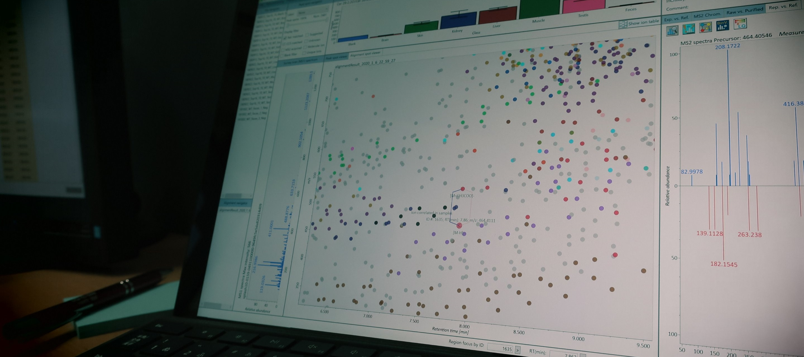

CompMS
Innovative data science in biology.
Science webpage of Dr. Hiroshi Tsugawa for Computational Mass Spectrometry (CompMS).
Visit our github and homepage for more information!
Visit our github and homepage for more information!


Publications
-
Correlation-based deconvolution (CorrDec) to generate high-quality MS2 spectra from data-independent acquisition in multisample studies. Analytical Chemistry, 92, 11310–11317, 2020
 [ACS page]
[ACS page]
-
MS-CleanR: A feature-filtering workflow for untargeted LC-MS based metabolomics. Analytical Chemistry, 92, 9971–9981, 2020 [ACS page]
-
A lipidome atlas in MS-DIAL 4. Nature Biotechnology, 38, 1159–1163, 2020 [NPG link]
Springer Nature 'SharedIt':full-text access to a view-only version of this paper
-
Creating a Reliable Mass Spectral–Retention Time Library for All Ion Fragmentation-Based Metabolomics. Metabolites, 9, 251, 2019 [MDPI link]
-
Characterization of Lipid Profiles after Dietary Intake of Polyunsaturated Fatty Acids Using Integrated Untargeted and Targeted Lipidomics. Metabolites, 9, 241, 2019 [MDPI link]
-
Mass Spectrometry Data Repository Enhances Novel Metabolite Discoveries with Advances in Computational Metabolomics. Metabolites, 9, 119, 2019 [MDPI link]
-
A cheminformatics approach to characterize metabolomes in stable-isotope-labeled organisms. Nature Methods, 16, 295–298, 2019 [NPG link]
Springer Nature 'SharedIt':full-text access to a view-only version of this paper
-
Advances in computational metabolomics and databases deepen the understanding of metabolisms. Current Opinion in Biotechnology, 54, 10–17, 2018 [ScienceDirect link]
-
Identifying metabolites by integrating metabolome databases with mass spectrometry cheminformatics. Nature Methods, 15, 53–56, 2018 [NPG link]
-
Integrated strategy for unknown EI–MS identification using quality control calibration curve, multivariate analysis, EI–MS spectral database, and retention index prediction. Analytical Chemistry, 89, 6766–6773, 2017 [ACS link]
-
The importance of bioinformatics for connecting data-driven lipidomics and biological insights. BBA-Molecular and Cell Biology of Lipids, 8, 762–765, 2017 [ScienceDirect link]
-
Comprehensive identification of sphingolipid species by in silico retention time and tandem mass spectral library. Journal of Cheminformatics, 9:19, 2017 [Springer link]
-
Automation of chemical assignment for identifying molecular formula of S-containing metabolites by combining metabolomics and chemoinformatics with 34S labeling. Metabolomics, 12:168, 2016 [Springer link]
-
Hydrogen rearrangement rules: computational MS/MS fragmentation and structure elucidation using MS-FINDER software. Analytical Chemistry, 88, 7946–7958, 2016 [ACS page]
-
MS-DIAL: data independent MS/MS deconvolution for comprehensive metabolome analysis. Nature Methods, 12, 523-526, 2015 [PubMed]
-
MRM-DIFF: Data Processing Strategy for Differential Analysis in Large Scale MRM-based Lipidomics Studies. Frontiers in Genetics, 5:471, 2014 [PubMed]
-
MRMPROBS Suite for metablomics using large-scale MRM assays. Bioinformatics, 30, 2379-2380, 2014 [PubMed]
-
MRMPROBS: A Data Assessment and Metabolite Identification Tool for Large-Scale Multiple Reaction Monitoring Based Widely Targeted Metabolomics. Analytical Chemistry, 85, 5191–5199, 2013 [PubMed]
-
Practical non-targeted gas chromatography/mass spectrometry-based metabolomics platform for metabolic phenotype analysis. J. Biosci. Bioeng. 112, 292–298, 2011 [PubMed]
-
GC/MS based metabolomics: dvelopment of a data mining system for metabolite identification by using soft independent modeling of class analogy (SIMCA). BMC Bioinformatics 12: 131, 2011 [PubMed]
Feedback
Your feedback is welcome.
If you report the bug of software tools, please contact out team with the following materials. Especially for MS-DIAL, please useissues and
discussions.
Software name and its version
MS raw data file (a representative one)
Powerpoint slides to explain your issues.
Other materials are welcome for me to understand what you face on.
If your comment is something that cannot be shared publickly, please email htsugawa@go.tuat.ac.jp.
If you report the bug of software tools, please contact out team with the following materials. Especially for MS-DIAL, please use
Software name and its version
MS raw data file (a representative one)
Powerpoint slides to explain your issues.
Other materials are welcome for me to understand what you face on.
If your comment is something that cannot be shared publickly, please email htsugawa@go.tuat.ac.jp.
Contact
Dr. Hiroshi Tsugawa, PhD.
Tokyo University of Agriculture and Technology (TUAT), 2-24-16 Nakacho, Koganei, Tokyo 184-8588, Japan
RIKEN CSRS/IMS, 1-7-22 Suehiro-cho, Tsurumi-ku, Yokohama, Kanagawa 230-0045, Japan
htsugawa@go.tuat.ac.jp